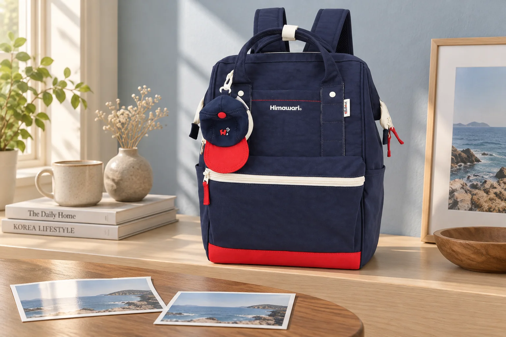
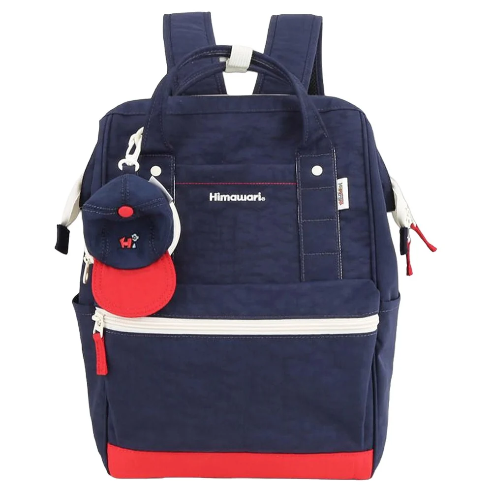
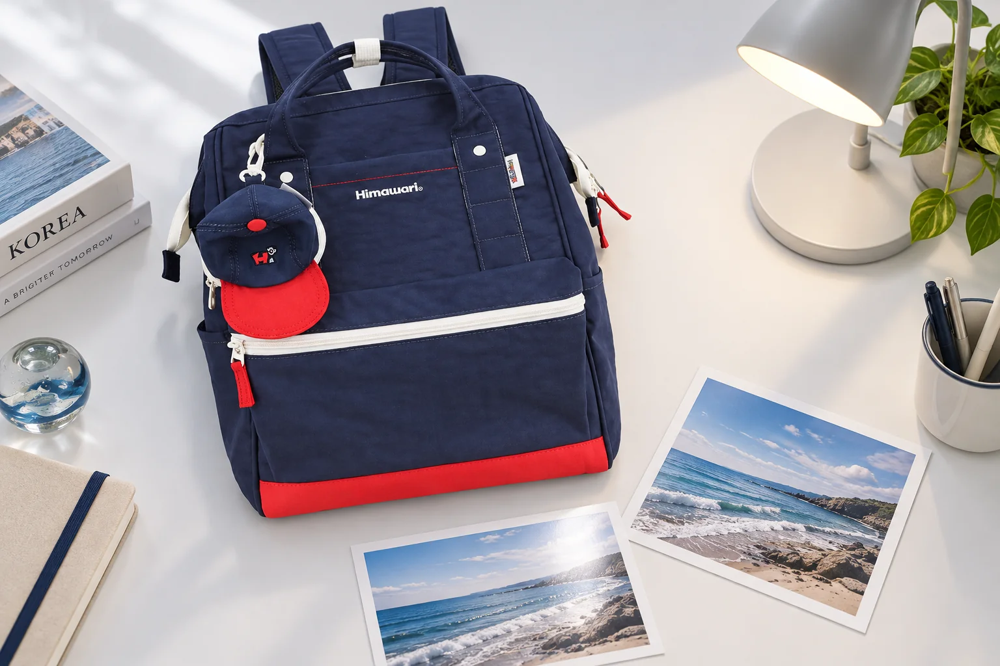

네이비 백팩에서 빨강과 아이보리가 먼저 보이는 이유

네이비 백팩을 찾다가 빨간 바닥에 먼저 눈이 갈 수 있습니다. 제품 이름에는 몸체의 큰 색이 적혀 있지만, 가방을 처음 본 인상은 작은 배색에서 시작되기도 합니다. 검은색에 가까운 짙은 면을 오래 보는 사람도 있고 밝은 지퍼 선을 먼저 따라가는 사람도 있습니다. 마음에 든 것이 네이비라는 색 자체인지, 그 위에 더해진 빨강과 밝은 선의 조합인지 구별하면 같은 색의 여러 백팩 중 무엇을 고를지 조금 더 분명해집니다.
백팩 한 개의 정면에 시선을 두고 큰 색면에서 작은 장식 순으로 살펴봅니다. 넓은 몸체, 위쪽 손잡이, 바닥을 따라 놓인 색이 서로 어느 자리를 맡는지 보는 것입니다. 가방을 작게 줄여 본 모습과 가까이 확대해 본 모습에서 기억나는 부분이 다른지도 살펴볼 수 있습니다. 멀리서 남는 큰 면과 가까이서 발견하는 장식을 따로 읽는 방법입니다.

바닥에 놓인 빨강과 몸체를 가로지르는 선
Himawari No.9007 네이비의 실제 제품 사진에는 짙은 몸체 아래에 빨간 띠 모양의 면이 보입니다. 앞쪽에는 밝은 가로 지퍼 선이 놓여 있고, 왼쪽 위에는 둥근 장식이 겹쳐 있습니다. 밝은 가로선이 짙은 앞면을 나누고 아래의 빨강은 그보다 좁은 띠로 남습니다. 두 부분을 번갈아 보면서 어느 쪽 때문에 이 모델을 다시 보게 되었는지 생각할 수 있습니다. 앞면의 넓은 짙은 색을 좋아했다면 작은 장식이 없는 모습도 상상해보고, 아래쪽의 선명한 배색을 좋아했다면 그 면적이 지금 정도일 때 마음에 드는지 봅니다.
사진을 작게 보았을 때에는 빨강이 아래쪽에 남아 가방의 끝을 또렷하게 느끼게 할 수 있습니다. 가까이 보면 그 위의 밝은 선과 둥근 장식이 따로 보입니다. 어느 부분이 가장 눈에 띄는지는 보는 사람과 배경에 따라 달라집니다. 자신의 반응을 적는다면 '빨간 면 때문에 아래쪽이 먼저 보인다' 정도로 표현하면 됩니다. 모든 사람에게 같은 시각적 효과가 난다는 설명보다 내가 고를 이유를 찾는 관찰에 가깝습니다.
같은 네이비라도 빨강이 손잡이에 있는 가방과 바닥에 있는 가방은 다른 조합으로 느껴질 수 있습니다. 상상으로 색을 옮겨보는 일은 취향을 알아보는 데 쓸 수 있습니다. 다만 실제로 구입할 옵션이 그런 배색으로 제공되는지는 상품 사진에서 확인해야 합니다. 현재 사진의 어느 부분을 좋아했는지 먼저 정해두면, 없는 옵션을 기대하거나 색상 이름만 보고 다른 구성을 고르는 일을 피하기 쉽습니다.
가방을 둘러싼 옷의 면적
검은 코트에 이 백팩을 멘 모습을 생각해봅니다. 짙은 몸체가 코트와 가까운 밝기로 이어지고, 빨간 아래쪽과 밝은 선이 상대적으로 눈에 들어올 수 있습니다. 반대로 밝은 겉옷에서는 몸체의 윤곽이 먼저 보일 수 있습니다. 자신이 자주 입는 겉옷 옆에 제품 사진을 놓고 두 인상 중 가까운 쪽을 찾아봅니다. 빨강이 조금 드러나는 조합을 원하는지, 가방 전체의 짙은 면을 드러내고 싶은지 묻습니다.
한 번은 가방 사진만 보고, 다음에는 평소 겉옷과 함께 봅니다. 단독으로는 장식이 많아 보였는데 옷 전체에서는 작은 포인트로 느껴질 수도 있습니다. 반대로 제품 사진에서는 지나쳤던 밝은 손잡이가 어깨 근처에서 계속 눈에 들어올 수도 있습니다. 가방을 정면으로 세워 둔 사진과 실제 등에 멘 뒷모습이 다른 판단 자료가 되는 이유입니다. 착용 연출은 그 차이를 떠올리는 참고로 쓰고 사람 대비 크기는 별도로 확인합니다.

배색의 개수를 세는 것만으로 단순하거나 복잡한 디자인을 가르기는 어렵습니다. 같은 세 가지 색도 넓게 나뉘면 큰 덩어리로 보이고, 작은 부분에 여러 번 나타나면 시선이 여러 곳을 오갈 수 있습니다. No.9007 사진에서는 바닥의 빨강과 앞면의 밝은 선이 서로 다른 크기로 놓입니다. 자신이 원하는 쪽이 큰 색면인지 작은 장식인지 알면 새로운 후보에서도 같은 질문을 이어갈 수 있습니다.
마음에 든 배색을 주문 옵션과 연결하기
네이비라는 이름만 남겨두면 나중에 검토할 때 처음 마음에 들었던 부분이 빠질 수 있습니다. 사진에서 좋아한 것이 바닥의 빨강이라면 그 면이 선택한 옵션에도 있는지 대조합니다. 둥근 장식처럼 제품과 함께 보이는 소품은 포함 구성과 탈착 가능 여부를 현재 안내에서 확인할 항목입니다. 마음에 드는 모양을 발견한 일과 구성품을 확인한 일은 각각 필요합니다. 장식이 사진에 있다는 이유만으로 모든 옵션에 같게 딸린다고 정하지 않습니다.
표면의 밝고 어두운 정도는 촬영과 화면에 영향을 받습니다. 두 사진에서 네이비가 다르게 느껴지면 먼저 같은 옵션인지 읽고, 빛을 받은 면과 그늘진 면이 어디인지 봅니다. 화면 밝기를 바꿔 원하는 색을 만들어낸 다음 실물도 같을 것이라 기대하기보다, 현재 자료에서 확실한 배색의 위치를 남기는 편이 판단에 도움이 됩니다. 색감 차이가 구매를 바꿀 정도라면 그 옵션의 추가 사진을 요청할 수 있습니다.
네이비를 골랐다는 결정 옆에 '짙은 몸체 아래 빨강이 조금 남는 구성이 마음에 들었다'는 이유를 붙여봅니다. 이후 다른 가방을 볼 때도 같은 기준으로 읽을 수 있습니다. 밝은 선이 없어 더 단순한 후보를 원할 수도 있고, 바닥색이 없는 후보가 아쉽게 느껴질 수도 있습니다. 색 이름이 같은 두 가방 사이에서 망설일 때에는 각 색이 얼마나 넓고 어느 위치에 있는지 돌아보면 됩니다. 선택할 사진에서 바닥과 손잡이까지 다시 보게 됩니다.